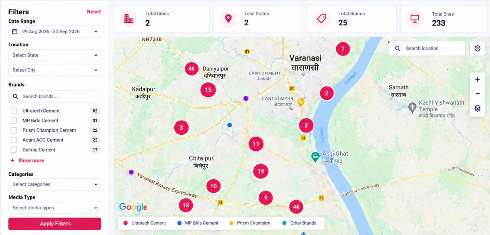
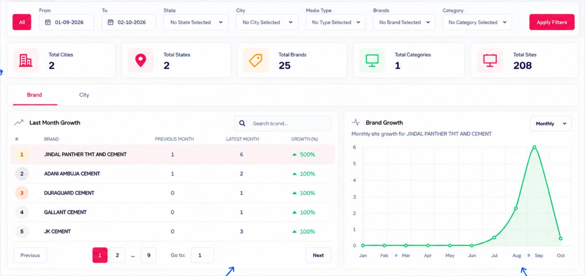
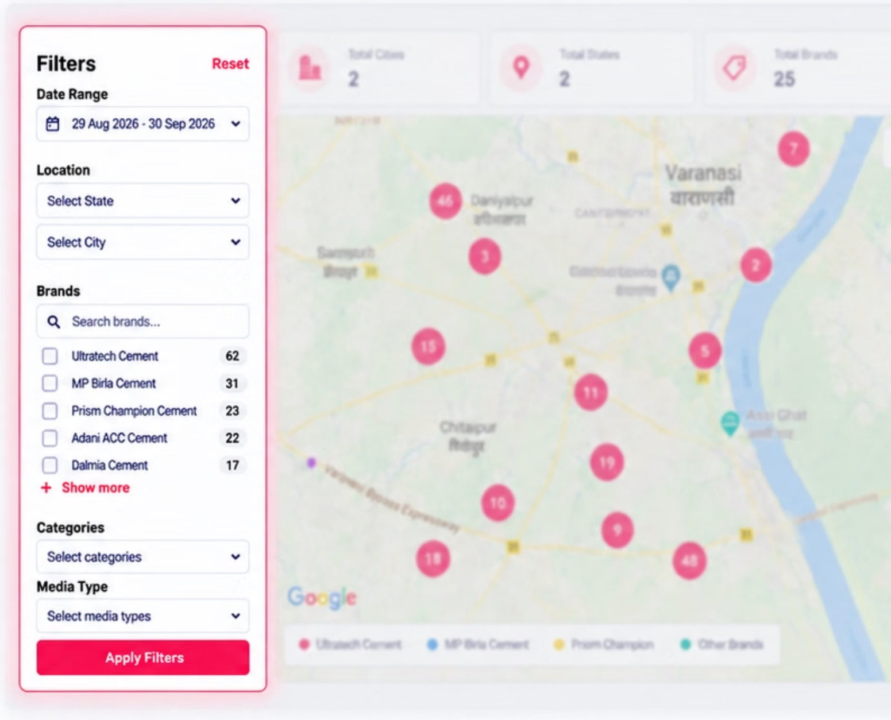
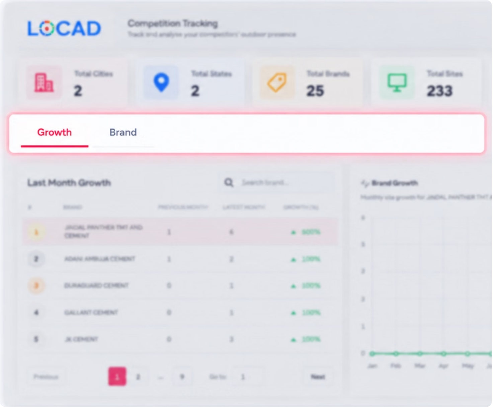
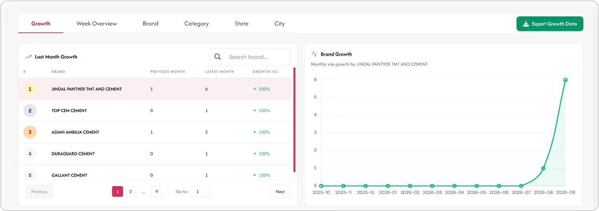
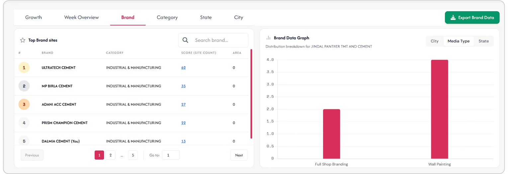
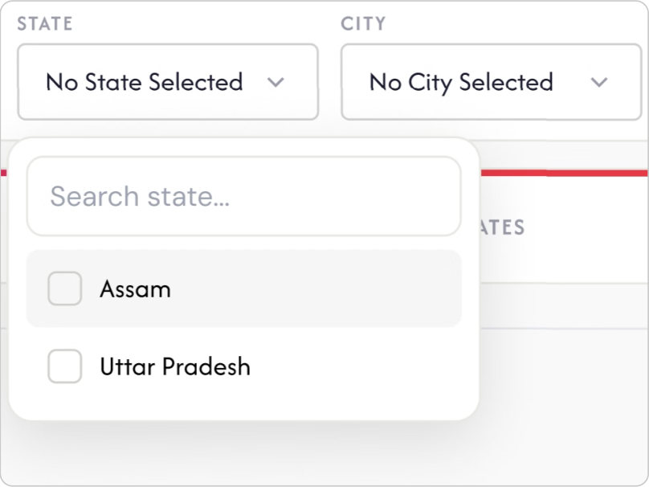
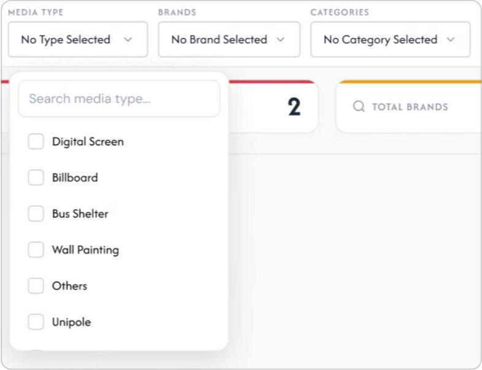
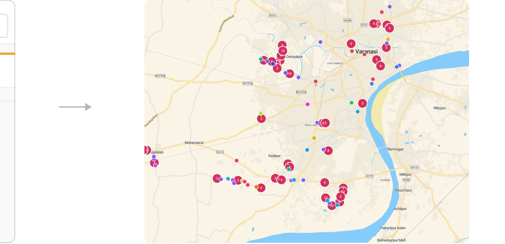

Helping brands see where their competitors already advertise.
With the data we had, I designed an experience to make competitor activity easier to explore.
The opportunity
From data we already had to a product worth building
We already had the data. We saw an opportunity to turn it into a product.
Context
Brands and agencies plan OOH campaigns in new cities.
Before starting a campaign, they want to understand which competitors are already advertising in that city, but this information is scattered across different vendors and requires manual effort to find.
Data we already had
LOCAD had a rich database of OOH sites. This included:
- OOH sites (site details and photos)
- Brands (advertisers at each site)
- Categories (industry and product categories)
- Locations (city, area and coordinates)
- Dates (when the data was captured)
What we thought of building
What if brands could use this data to understand where competitors are already active?
We explored building a map and analytics experience that lets planners view competitor presence across locations, categories and time — all using LOCAD’s existing data.
The opportunity was beyond OOH sites.
The goal was to make the relevant competitive context easier to understand for brands and agencies.
Who
Which brands are already active in the market?
See which advertisers are present across different locations and categories.
Where
Where are those brands concentrated across the city?
Understand the geographic presence of competitors across different areas.
How much?
How strong is their presence?
Compare the number and distribution of sites across competitors to understand the competitive intensity.
When
How has their presence changed over time?
Compare activity across time periods to see trends and recent movements.
Product boundary
Competition Tracking gives brands and agencies competitive context — it doesn’t recommend where they should run their next campaign.
With the underlying data we had, I mapped possible product directions.
I discussed them with clients to understand which one best matched their needs. With the data and client feedback in mind, I explored some product directions.
Market Exploration Tool
Understand what is happening across a city or market.
Uses available data
Brand Footprint
Understand where a particular brand is already present.
Uses available data
Site Intelligence
Understand the brands and activity around OOH sites.
Uses available data
Competition Tracking
Understand where competing brands within a category are active.
Uses available data
Why we chose Competition Tracking?
Strong client need
Clients wanted to understand where their competitors are active within a category.
The data was already there
Our existing OOH data included brands, categories, locations and capture dates.
Clearer product focus
It answered a specific high-value question: “Where and how are my competitors active?”
Room to grow
The same foundation can support deeper analysis over time.
Important boundary
Competition Tracking provides competitive context, not campaign recommendations.
It gives customers the insights they need to make better decisions before planning their campaigns.
The first version
Two ways to explore, and what users said about them
We focused the feature around two complementary ways of exploring competitor activity.
The experience combines a map for geographic exploration and analytics for understanding patterns across brands, categories, locations and time.
Section 01: Map
Where are competitors active?
Explore competitor activity across cities and locations, identify clusters and view specific advertisements on the map.
Section 02: Analytics
What patterns can we see?
Compare brands, categories, locations and time to understand competitive presence and identify key insights.


The filter panel’s position was inconvenient for users
Users found it difficult to explore the map because the filter panel occupied too much space, reducing the area available for the map.
User response
“I have to keep going back to the left to change filters. Since my main focus is the map, I’d rather have more space to explore it.”
User problems
- Disrupted exploration flow: Users had to often switch focus from the map to the left panel to adjust filters, which interrupted their analysis.
- Filters felt secondary: Since the primary task was exploring locations on the map, keeping filters on the left made the experience feel less intuitive.
User feedback
- “Can the filters be closer or easier to access while exploring the map?”
- “I’d prefer filters at the top or a collapsible panel so I can stay focused on the map.”

Users wanted more ways to analyse the same data
The initial version only had two analysis options, which limited how users could explore the data.

User response
“I can see the brands and cities, but I think I’m still missing the bigger picture. I’d like to know how growth is changing week by week and which states are driving it.”
User problems
- No growth trend view: Users could see current numbers, but couldn’t quickly understand how competitor activity was changing over time.
- No state-level context: Users wanted to identify which states were contributing to the overall competition activity.
User feedback
- “Can I see this week by week?” Users wanted a quick way to compare activity across different weeks.
- “Can I download the data I’m looking at?” Users wanted an easy way to export the specific data they were analysing for further use.
The refinement and the result
What changed, what it showed, and what I took from it
We iterated on the feedback and created a refined experience
The findings from user testing helped us identify the key friction points. We used these insights to redesign the map and analysis experience for easier and faster exploration.
Reworked the filter experience
We reduced the visual footprint of filters and made them easier to access, so users could explore the map without losing focus.
Improved map exploration
We gave the map more space and made competitor locations easier to understand with clearer clusters and brand identification.
Simplified the information hierarchy
We reorganised metrics, controls and content to surface the most important information and reduce visual clutter.
Focused on real user needs
The V2 was a direct response to user feedback, refining the experience to better support how users actually explore competition data.
Map view · V2
Redesigning the map view
Based on user feedback, we moved filters to the top, gave more space to the map and kept key metrics visible so users can quickly explore competitor activity.
Drag to compare V1 and V2
Analytics view · V2
Redesigning the analytics view
Based on user feedback, we moved filters to the top, gave more space to the map and kept key metrics visible so users can quickly explore competitor activity.
Drag to compare V1 and V2
We turned raw activity into competitive signals
Once users found competitor activity on the map, the next challenge was helping them understand what the data meant, who was active, and how it was changing over time.
Track change
Growth helps users identify shifts in competitive presence over time.
Why this structure?
We paired a scannable ranking with a trend visualization so users could quickly see which brands are gaining or losing presence and also understand the change over time.

Compare competitors
Brand-level analysis lets users understand competitive presence at a glance.
Why this structure?
A ranked table makes it easy to compare brands, while the breakdown chart shows how their presence is distributed across media types, helping users understand the composition behind numbers.

The idea was simple: let users narrow a large OOH dataset down to the competition they actually want to understand.
01 · Set the market
Choose the city and location you want to investigate.

02 · Narrow the search
Filter competitor activity by brand, category, media type and date.

03 · Spot the patterns
See where competitors are active and identify clusters worth exploring.

The goal was to make the right data discoverable.
Competition Tracking gained traction and delivered value
After launch, the feature was adopted by multiple client brands and used regularly to explore competitor activity across markets.
Competitor sites tracked
A growing dataset of competitor locations enabling deeper market analysis.
Brands using Competition Tracking
Adopted by client brands to monitor competitor OOH activity across key markets.
Clients and internal teams found the feature useful for planning, analysis and client discussions.
“This helps us quickly see where competitors are active and plan our next campaign.”
— Dalmia Cements
“The map view makes it much easier to explore locations and compare presence across brands.”
— JCD
“We use this regularly before client meetings. It gives us a clearer view of the competitive landscape.”
— Maruti Suzuki
Key takeaway
Competition Tracking is now actively used by client brands, with a growing dataset and strong repeat usage — validating that the redesigned experience is solving a real and important need.
Working with complex OOH data, business requirements and diverse user needs helped me grow as a product designer.
Designing with complex data
Learned to simplify large and fragmented OOH data into a clear and usable experience.
Balancing multiple perspectives
Considered the needs of brands, agencies and internal teams while defining the experience.
From data to insights
Moved beyond showing sites to helping users identify meaningful patterns and opportunities.
Thinking like a product designer
Understood how a feature can create business value and evolve into a premium offering.
Biggest takeaway
The biggest thing I learned was that showing the data wasn’t enough. I had to make it easier for users to find what actually mattered to them.